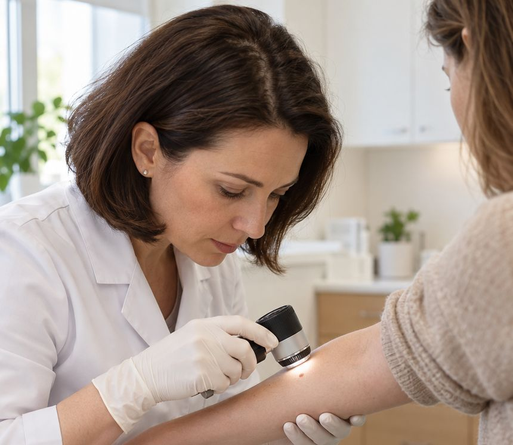

Дерматовенеролог
2 800 ₽
Сыпь, зуд, шелушение, акне, подозрение на грибок кожи и ногтей, лишай, экзема, папилломы и кератомы, а также вопросы инфекций, передающихся половым путём.
ЗаписатьсяДерматолог в Красноярске: приём дерматовенеролога и дерматоонколога, дерматоскопия родинок, биопсия и радиоволновое удаление доброкачественных новообразований кожи на аппарате «Фотек».

Если сомневаетесь, начните с дерматовенеролога: при необходимости он направит к дерматоонкологу.
Сыпь, зуд, шелушение, акне, подозрение на грибок кожи и ногтей, лишай, экзема, папилломы и кератомы, а также вопросы инфекций, передающихся половым путём.
ЗаписатьсяОсмотр родинок и новообразований кожи, оценка риска, решение о наблюдении, биопсии или удалении. Подходит для профилактической проверки всех родинок.
ЗаписатьсяПростая памятка, чтобы вовремя заметить изменения. Если хотя бы один пункт про вашу родинку — покажите её врачу. Это не диагноз, а повод для осмотра.
Одна половина родинки не похожа на другую.
Неровные, размытые, «рваные» границы.
Неоднородный цвет, несколько оттенков, тёмные или светлые участки.
Диаметр больше 6 мм или заметный рост.
Любые изменения: форма, цвет, зуд, кровоточивость, корочка.
Большинство исследований проводятся прямо на приёме и занимают немного времени. Материал для гистологии и цитологии отправляют в лабораторию.
Осмотр родинки или новообразования под увеличением с подсветкой: врач видит структуру, которая не заметна невооружённым глазом. 1 элемент — 1 000 ₽, от 2 до 4 — 2 500 ₽.
Люминесцентная диагностика: осмотр кожи в ультрафиолетовом свете помогает заподозрить некоторые грибковые поражения и нарушения пигментации. 1 000 ₽.
Осмотр кожи через стекло при надавливании — простой способ отличить сосудистые элементы от других. 200 ₽.
Соскоб на патогенный грибок с кожи, чешуек и ногтей, а также с эрозивно-язвенных элементов кожи и слизистых. 550 ₽.
Punch-биопсия — забор небольшого фрагмента кожи для гистологического исследования. Проводится под местной анестезией. 4 000 ₽.
Исследование удалённой ткани или мазка в лаборатории — чтобы точно знать природу образования. Гистология — 2 300 ₽.
Доброкачественные новообразования кожи удаляют радиоволновым методом на аппарате «Фотек». Радиоволна рассекает ткань и одновременно коагулирует мелкие сосуды — это помогает уменьшить кровоточивость. Процедура проводится под местной анестезией и обычно переносится комфортно.
Перед удалением врач обязательно осматривает образование дерматоскопом. Если есть малейшие сомнения в его доброкачественности, «косметическое» удаление не проводят: врач предложит биопсию или удаление с гистологическим исследованием.
После процедуры на месте удаления образуется корочка, которая отходит самостоятельно. Врач даст рекомендации по уходу; срок заживления зависит от размера и расположения образования.
Анестезия — от 1 000 ₽, гистологическое исследование — 2 300 ₽, оплачиваются отдельно. Окончательную стоимость врач назовёт после осмотра.
Удаление возможно в день консультации, если врач не видит противопоказаний и сомнений в характере образования.
Врач оценивает образование, при необходимости — несколько сразу, и обсуждает с вами метод и стоимость.
Местная анестезия и удаление радиоволновым методом. Материал при необходимости направляют на гистологию.
Не срывайте корочку, не распаривайте кожу и защищайте зону от солнца, пока идёт заживление. Контрольный осмотр — по рекомендации врача.

Приём ведёт врач-дерматовенеролог, расписание уточняйте у администратора по телефону +7 (913) 558-87-11.
Цены совпадают с прайсом, утверждённым в клинике. Стоимость анестезии и гистологии указана отдельно.
Не нашли ответ? Позвоните: +7 (913) 558-87-11
Профилактический осмотр у дерматолога обычно рекомендуют раз в год, а при большом количестве родинок или случаях меланомы в семье — по графику, который предложит врач. Между визитами осматривайте кожу сами по правилу АКОРД.
Можно, если соблюдать рекомендации: защищать зону удаления от солнца одеждой или пластырем, пока идёт заживление. Если планируете отпуск у моря, обсудите сроки удаления с врачом.
Это зависит от размера, глубины и расположения образования, а также от особенностей заживления кожи. Врач оценит это заранее и скажет, чего ожидать именно в вашем случае.
Если у врача есть хотя бы малейшие сомнения в характере образования, гистологическое исследование необходимо. В остальных случаях врач обсудит с вами, нужно ли оно. Гистология — единственный способ точно установить природу ткани.
Да. Дерматовенеролог консультирует в том числе по вопросам инфекций, передающихся половым путём. Необходимые обследования врач назначит на приёме; мазки и кровь можно сдать в процедурном кабинете центра.
Например: УЗИ, SVF, гинеколог, ЭКГ, массаж